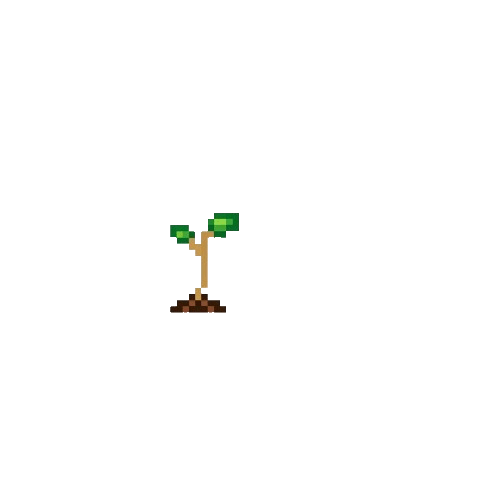

I'm pursuing an MS in Artificial Intelligence at Northeastern University's Khoury College of Computer Sciences in Boston (Jan 2026 – present), after a B.Tech in Computer Science & Engineering from SRM Institute of Science and Technology.
I build on-device ML for Apple Silicon and do research across multimodal audio-language modeling, self-supervised vision, and failure-aware clinical AI. I'm currently studying reinforcement learning and sequential decision making.
Previously I was an R&D Intern → Junior R&D Engineer in Computer Vision at SPAN Inspection Systems (Dec 2024 – Oct 2025), working on coronary artery segmentation and stenosis detection.
Graduate research at Northeastern. Fuses Gemma 4's frozen audio Conformer (305M) with its frozen text encoder (4.6B) via bidirectional cross-modal attention, training only ~4M parameters. Reaches 83.9% test accuracy on 16-genre FMA-Medium, +9.1 pp over the best audio-only baseline, with ~25× fewer trainable parameters than full fine-tuning. Six pre-trained audio encoders were benchmarked on Northeastern's Explorer HPC cluster.
Comparative analysis of ResNet, Bi-LSTM, and their attention variants for ECG classification, and a proposed ResNet + Transformer-encoder architecture for better feature extraction and classification.
Implemented ViT and Masked Autoencoders from scratch in PyTorch for pre-training, fine-tuning, and linear probing on the CADICA dataset, learning from unlabeled angiograms. Benchmarked U-Net, SAM2, TransUNet, and Swin-UNet for X-ray coronary segmentation across accuracy, generalizability, and compute cost, and shipped models to production via ONNX.
Fine-tuned SAM2 with two PEFT approaches to a 92.0% Dice score, deployed as a public browser tool on Hugging Face Spaces where anyone can upload an angiogram and refine the segmentation interactively.
On-device dictation for code-switched speech (Hinglish/Gujlish) on Apple Silicon. Quantized a Gemma 4 audio-language model to 4-bit with MLX, built a benchmark from 631 real dictation clips, and ranked 5 local ASR backends. Rust (Tauri 2), Python, MLX, React/TypeScript.
Three-agent pipeline on MIMIC-IV v3.1 (546K hospitalizations) that routes uncertain or out-of-distribution cases to clinicians: baseline AUROC 0.871, PCA-based OOD detection, and a failure-aware layer catching 28.5% of the baseline's false negatives. Also a ResNet-50 on BRSET fundus images (AUROC 0.8831 for macular edema).
Interactive D3.js network graph of AI startup–investor relationships, with timeline animation, filtering, and zoom.

Research, like bonsai cultivation, requires patience, vision, and meticulous attention to detail.
"Your mind is like this water. When it becomes agitated, it becomes difficult to see. But if you allow it to settle, the answer becomes clear."
- Master Oogway